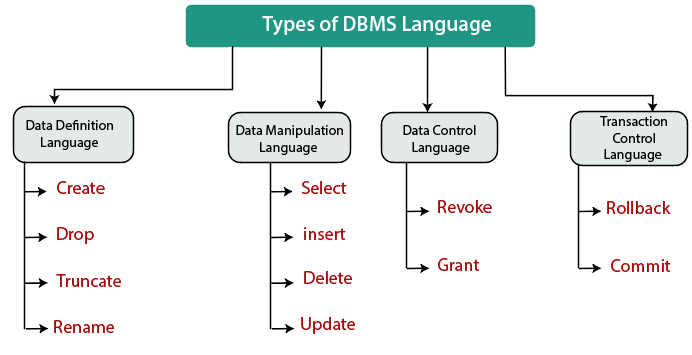

Database Language is a special type of programming language used to define and manipulate a database. Based on their application, database languages are classified into four different types: DDL, DML, DCL, and TCL.
It is a language that allows the user to define the data and their relationship to other types of data. The DDL commands are: Create, Alter, Rename, Drop, Truncate.
It is a language that provides a set of operations to support the basic data manipulation operation on data held in the database. The DML commands are: Insert, delete, update, select, merge, call.
DCL is used to access the stored data. It is mainly used for revoke and grant the user access to a database. The DCL commands are: Grant, Revoke.
TCL is a language which manages the transactions within the database. It is used to execute the changes made by the data manipulation language statements. The TCL commands are: Commit, Rollback.